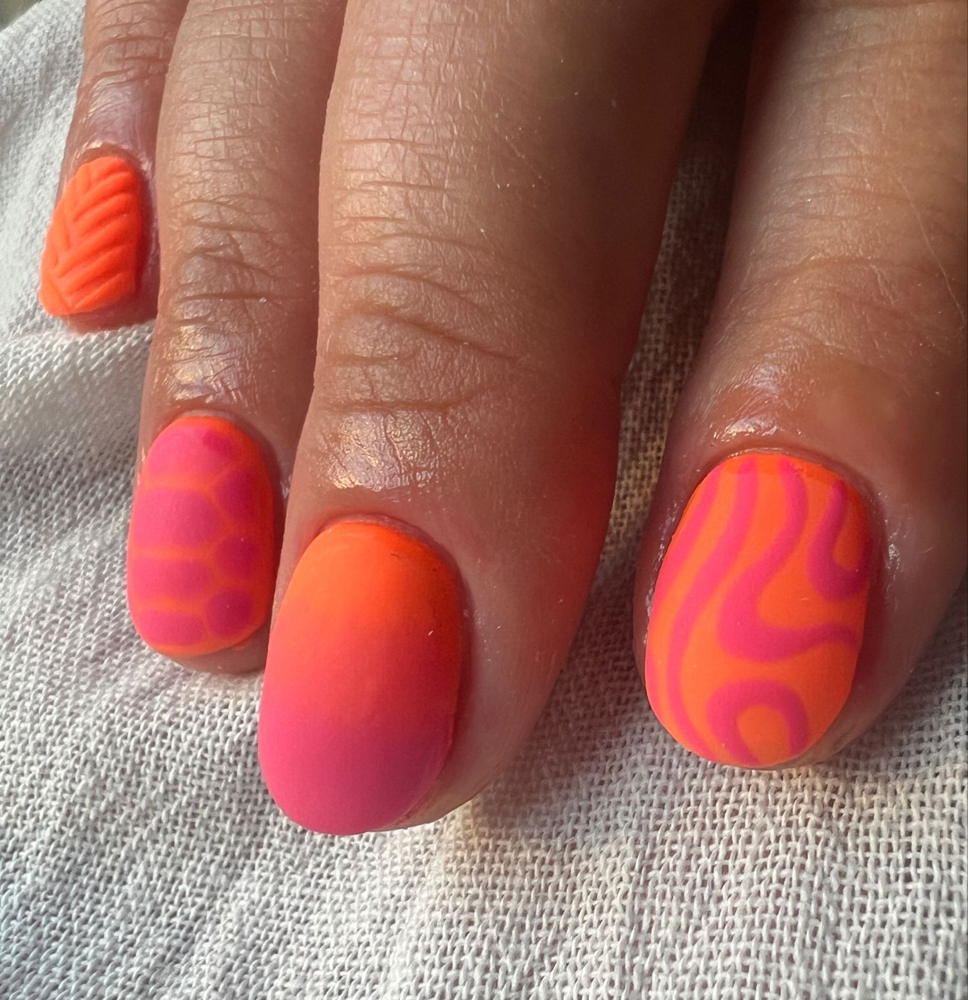
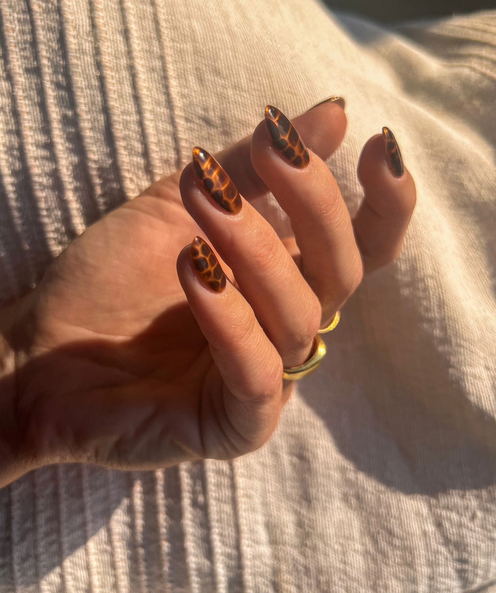

Semi-permanente

Un esmalte semipermanente es un tipo de manicura que se hace cada 2-3 semanas; a diferencia de los esmaltes clásicos, la manicura semipermanente no requiere que se retire y se vuelva a poner de nuevo con tanta frecuencia, todo es gracias a su durabilidad
Kapping

El Kapping (o capping) es una técnica que fortalece superficialmente la uña, haciéndola más gruesa y resistente, consiste en aplicar una fina capa de acrílico o gel fortificador que actuará como una barrera protectora. Este proceso es superficial y con una finalidad estética
Soft Gel

La técnica de Soft Gel consiste en un método de extensión de uñas mediante tips que se adhieren directamente a la superficie de la uña natural. Los Soft Gel Nail Tips de Manicura24 están hechos de plástico flexible y se han ganado su popularidad por tratarse de una técnica rápida, cómoda y efectiva.